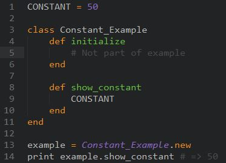

One of the things that has become really important since I started working with Ruby Classes, has been understanding the usage of different types of variables.
There are 5 types of variables that I've dealt with thus far:
CONSTANT, $global, @@class, @instance, and local variables.CONSTANT variables are defined using all uppercase letters or beginning with one uppercase letter. These variables can be altered if you want, but the program will give you a warning to make sure you know you're changing the value. These variables can be accessed anywhere in the program, regardless of scope. CONSTANT variables are typically used to keep track of values which are, as the name infers, static, and will not change.
$global variables, like CONSTANTS have accessibility from anywhere, and can be changed at any time in a Ruby program. This is not the best practice though, because they are meant to be relatively static, and not manipulated as frequently as other variables. These variables are identified by the $ before the variable name.
The point of this is that the global variable can be defined outside of the method or class, and can be called anywhere within it. Global variables are typically unchanging variables because manipulating them throughout a program would create inconsistency and troubleshooting problems.
@@class variables are shared across all instances of any given class. They are able to be used in instance methods within a class, as well as outside of the class. Whenever you create a new instance of a particular class, you can use that same @@class variable within the instance. These variables are defined using a @@ before the variable name.
@instance variables are variables which can only be accessed within any given instance of a Class. They cannot be accessed outside of the class. These variables are meant to have scope which is accessible to any method within the same class. These variables are defined using a @ before the variable name.
This is an example showing how instance variables are defined and used within each instance of the class, Speak. The class variable @@total though keeps updating throughout each instance of the class (sentence1, sentence2, and sentence 3).
local variables are variables whose scope is only valid within the immediate parent method in which they are defined. They can be accessed and manipulated only within that parent method. This is the reason why when working with classes, we use instance variables. It allows us to bypass the issue of scope. Local variables are defined by having any word which begins in a lowercase letter or an underscore.
I hope this post gave you a good idea of what each of the variables are, what their scope is, and how they can be used best!
Thanks for reading,
Vineet Rastogi